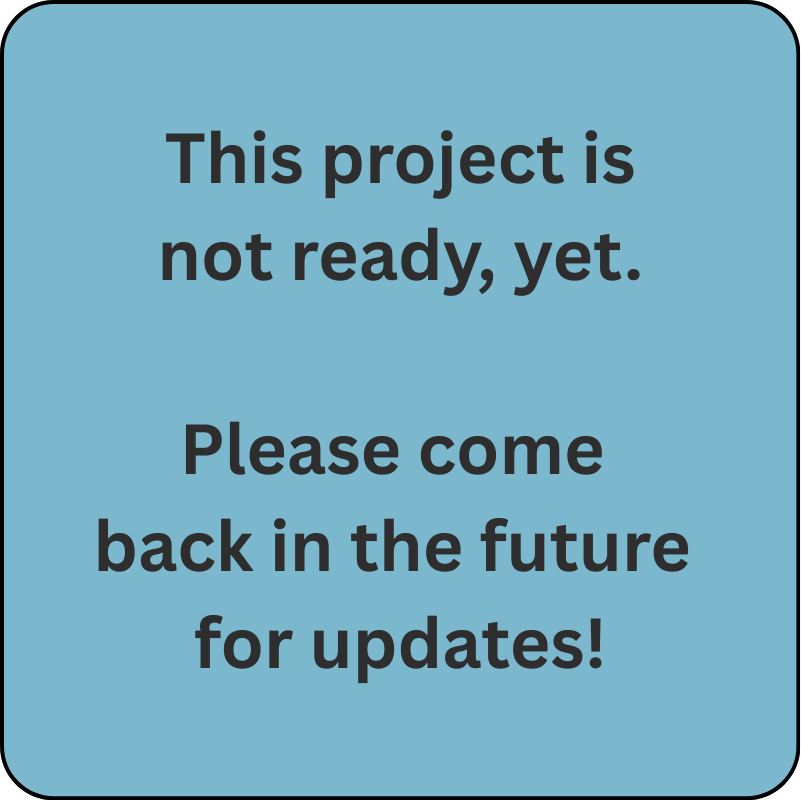
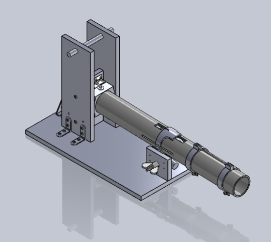

|
Lars Paulsen
I am a Master's student in Mechanical Engineering at UC San Diego, where I am advised by Prof. Xiaolong Wang on improving teleoperation methods and user control.
|
{kind=link}
ResearchI want to develop robots as dexterous as humans and improve their performance in highly dynamic environments. |

|
ACE-F: A Cross Embodiment Foldable System with Force Feedback for Dexterous Teleoperation
Rui Yan*, Jiajian Fu*, Shiqi Yang*, Lars Paulsen*, Xuxin Cheng, Xiaolong Wang Under-Review project page A new, low-cost, low-complexity teleoperation system with a novel force-feedback controller. |

|
Humanoid Policy ~ Human Policy
Ri-Zhao Qiu*, Shiqi Yang*, Xuxin Cheng*, Chaitanya Chawla*, Jialong Li, Tairan He, Ge Yan, David J. Yoon, Ryan Hoque, Lars Paulsen, Ge Yang, Jian Zhang, Sha Yi, Guanya Shi, Xiaolong Wang CoRL, 2025 project page / arXiv Using ego-centric human demonstrations as cross-embodiment training data for robot learning. |
|

|
[In-Progress] A Novel Device for Magnetizing Hard Magnetic Materials
Lars Paulsen*, Mahtab Shakibmanesh*, Camilo Velez Cuervo A novel device for orienting magnetic fields during 3D printing. |
Other ProjectsSome of my other projects have been conducted outside of research, including personal interests and extensions of classwork. |

|
Electromechanical Thermal Microgripper
supplementary info A novel electrothermally actuated microgripper for isolationg pharmaceutical microcapsules. |
|

|
Golf Ball Launcher
supplementary info A mechanical golf ball launcher with built-in trajectory generator and integrated arming and launching mechanisms. |
Miscellaneous |
Teaching |
Graduate Student Instructor, PHYS2CL Fall 2024 |
|
Feel free to steal this website's source code. Do not scrape the HTML from this page itself, as it includes analytics tags that you do not want on your own website — use the github code instead. Also, consider using Leonid Keselman's Jekyll fork of this page. |